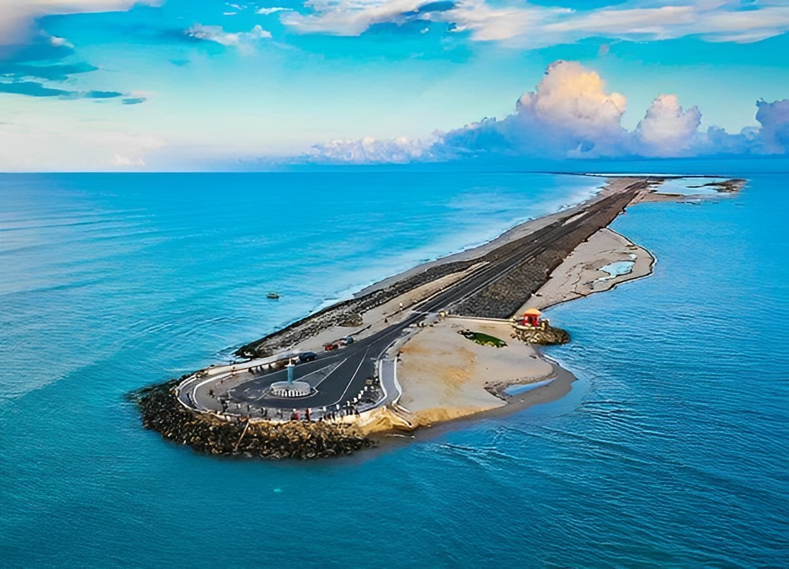
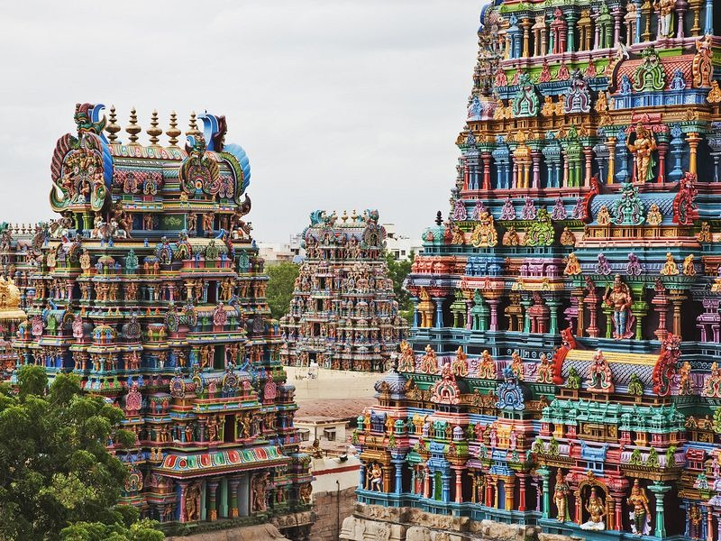
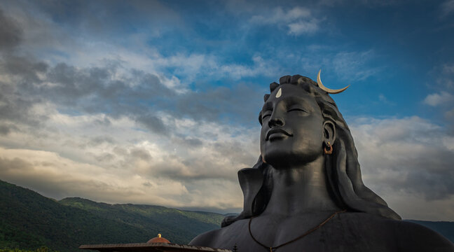
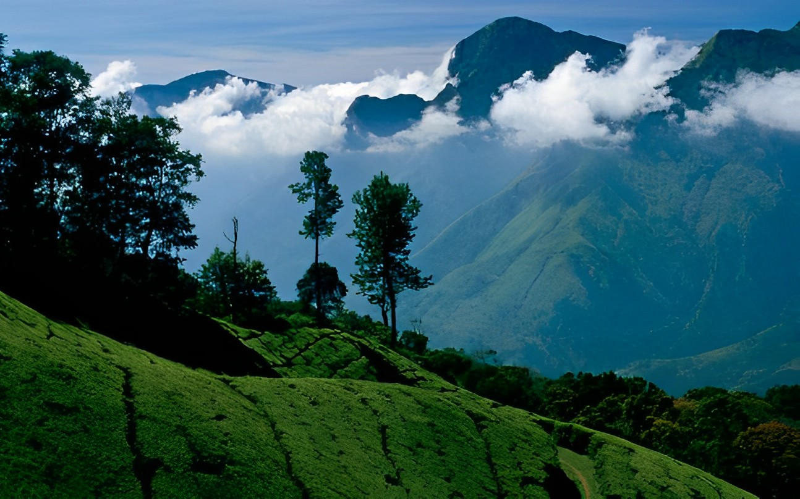

WORLD THROUGH
TRAVEL
Tamil Nadu
1 Rameshwaram
Rameshwaram, also spelled as Rameswaram, is a town located on an island in the Gulf of Mannar in the state of Tamil Nadu, India. It is considered one of the holiest places for Hindus and holds immense religious significance. Rameshwaram is renowned for its ancient Ramanathaswamy Temple, dedicated to Lord Shiva. The temple is believed to have been established by Lord Rama himself and is one of the twelve Jyotirlingas (divine representations of Lord Shiva). It attracts a large number of devotees and pilgrims from all over India. The Ramanathaswamy Temple is famous for its long corridor, which is one of the longest temple corridors in the world, stretching over 1.2 kilometers (0.75 miles). The temple also has 22 sacred wells, and it is believed that bathing in these wells can cleanse one's sins. One of the major attractions in Rameshwaram is the Agni Theertham, a sacred bathing ghat situated on the seashore. It is believed to be the place where Lord Rama worshipped Lord Shiva before his battle against Ravana in the Ramayana epic.
 Save My Trip2 Meenakshi Amman Temple
The temple you are referring to is likely the Meenakshi Amman Temple, also known as the Meenakshi Temple or Meenakshi Sundareswarar Temple. It is a historic Hindu temple dedicated to Goddess Meenakshi (an avatar of Goddess Parvati) and her consort Lord Sundareswarar (an avatar of Lord Shiva). The temple is located in the city of Madurai, in the state of Tamil Nadu, India. The Meenakshi Amman Temple is considered one of the most prominent and ancient temples in India. It is known for its stunning architecture, intricate carvings, and grandeur. The temple complex spans over an area of about 14 acres and consists of several mandapams (pillared halls), towers (gopurams), and shrines. The most notable feature of the temple is its towering gopurams, which are intricately sculpted with colorful figures depicting various mythological stories and deities. The tallest gopuram, known as the South Tower, reaches a height of about 52 meters (170 feet) and is adorned with thousands of sculptures. The temple attracts a large number of devotees and tourists throughout the year, especially during festivals. One of the most significant festivals celebrated at the Meenakshi Amman Temple is the Meenakshi Thirukalyanam, a grand celestial wedding ceremony of Goddess Meenakshi and Lord Sundareswarar.
 Save My Trip3 Adiyogi
Adiyogi is a term associated with Lord Shiva and refers to him as the "First Yogi" or the "Adi Yogi." In the yogic tradition, Lord Shiva is considered the originator and ultimate exponent of yoga. There is a significant landmark dedicated to Adiyogi called the "Adiyogi Shiva Statue." This magnificent statue is located in the foothills of the Velliangiri Mountains near Coimbatore, Tamil Nadu, India. It was consecrated by the spiritual leader Sadhguru Jaggi Vasudev and inaugurated in 2017. The Adiyogi Shiva Statue is a 34-meter (112 feet) tall statue of Lord Shiva in a meditative posture, representing his role as the first yogi and the source of yogic sciences. The statue is made of steel and weighs about 500 tons. It is recognized as the largest bust sculpture in the world. The Adiyogi Shiva Statue has gained popularity as a pilgrimage site and a center for yoga and meditation. It symbolizes the essence of yoga and serves as a reminder of the significance of inner well-being and self-transformation. In addition to the statue, the Adiyogi complex also includes meditation spaces, a consecrated pond, and a variety of programs and events related to yoga and spirituality. It attracts visitors from around the world who come to experience the serenity of the surroundings and engage in practices that promote inner growth and well-being.
 Save My Trip4 Ooty Hill Station
Ooty, short for Ootacamund, is a popular hill station located in the Nilgiri Hills of Tamil Nadu, India. It is a picturesque town known for its natural beauty, pleasant climate, and tea plantations. Ooty is a popular tourist destination and attracts visitors from all over India and abroad. The town is situated at an altitude of approximately 2,240 meters (7,350 feet) above sea level, which contributes to its cool and refreshing climate. Ooty is characterized by rolling hills, lush green valleys, tea gardens, and dense forests, creating a scenic and tranquil environment. One of the main attractions in Ooty is the Nilgiri Mountain Railway, a UNESCO World Heritage site. This toy train ride offers a delightful journey through picturesque landscapes, including tunnels, bridges, and steep curves. It is a popular tourist activity and provides panoramic views of the surrounding hills. The Botanical Gardens in Ooty are another major tourist attraction. Spread over 55 acres, the gardens showcase a wide variety of flora, including rare and exotic plants. Visitors can explore the different sections of the gardens, which feature a variety of flowers, trees, and a fossilized tree trunk believed to be around 20 million years old.
 Save My Trip